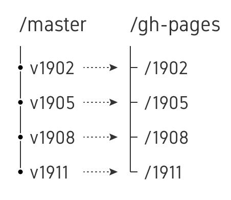

Usage guide
Workshop-Template-Rmd
1 Introduction
This is an Rmarkdown driven website for courses designed to work with GitHub and GitHub actions. This is generally aimed at creating web pages that include executable R code (Rmarkdown documents). Regular markdown documents work as well. All code, tools (R packages) and the environment required to build the output is made available within the repo. The source materials (.R, .Rmd, .md etc) are updated and pushed to the GitHub repo. The documents are built and rendered using GitHub actions. A key thing to note is that all contents are run, executed and built every time a change is pushed. Therefore, this is not ideal for long computations. The rest of this document describes how to use this repository for your own courses.
2 File descriptions
2.2 Workshop content files
| Filename | Type | Description |
|---|---|---|
| index.Rmd | Rmd | Home page |
| schedule.csv | csv | Schedule data |
| home_schedule.Rmd | Rmd | Schedule page (time, date, time table, room) |
| home_info.Rmd | Rmd | Practical info (travel, venue, contact) |
| home_precourse.Rmd | Rmd | Precourse instructions (installation, syllabus, learning outcome) |
| home_content.Rmd | Rmd | All contents organised by topic |
| slide_topic.Rmd | Rmd | Slide files for topics |
| lab_topic.Rmd | Rmd/md | Lab files for topics |
| assets | Folder | Shared assets for whole website |
| data | Folder | Shared data for individual documents |
3 Creating a new course
- Fork this repo to your account. Then clone it to your system.
git clone https://github.com/user/workshop-template-rmd-ga.git- Add a personal access token under repo Settings > Secrets and name it
TOKEN. This needs the following permissions: admin:repo_hook, repo, workflow, write:packages. This token is used for pushing/pulling to the GitHub repository. - Add another personal access token under repo Settings > Secrets and name it
PAT. This needs no permissions. This token is used when installing R packages from GitHub. - Update README.md
- Update repo and badge links
- Check year in the bottom
- Updates in folder
assets/- Update links in footer-lab.html, footer-lab.Rmd and footer-slide.Rmd
- Update logo.svg, favicon.ico and favicon.png as needed
- Update
_site.yml- Set argument
output_dir:to a year-month (YYMM) combination like 1908. This is important in subsequent instances of the course, so that output from the previous instance is not overwritten. - Update
name:of the workshop - Check
location:. This affects details displayed in home_info.Rmd. - Check
assistants:(Optional) This is a list of names of assistants involved with the course. This information will be displayed under the schedule. Leave this empty if there are no assistants. - Update
favicon:andnavbar/logo/image:as needed - Update
navbar/logo/hrefto point to the correct site - Update R packages under
packages:. Add CRAN packages to packages_cran_, bioconductor packages to packages_bioc_ and github packages to packages_github_. Packages to be installed by a student must be listed under packages_xxx_student. These packages are then displayed in home_precourse.Rmd. Packages not required to be installed by students, such as those relating to the functioning of this website are listed under packages_xxx_repo.
- Set argument
- Update index.Rmd. This is the home page.
- Do not change the YAML header
- Further below, update title, subtitle and features as needed.
- Update schedule.csv
- This table holds the schedule information displayed on home_schedule.Rmd
- Columns are delimited by
; - Open/edit in a spreadsheet or text editor. When saving make sure it is still delimited by
;. - Do not change the number of columns, position of columns, column names or date format
- Rows can be freely added or removed
- Set date, room, start_time, end_time, topic and person as needed
- date: Full date for each day in format dd/mm/yyyy. Missing/empty cells are filled down automatically
- room: (Optional) Room number for the workshop. Missing/empty cells are filled down automatically
- start_time/end_time: Start and end time for session (Eg: 09:00)
- topic: Topic name (Keep it short)
- teacher: Name of the person covering the topic
- assistant,
link_slide,link_labandlink_roomare optional. If included, it will show up on the schedule - assistant is optional for listing TAs
- link_slide: (Optional) Link to the presentation. Local links can be like
slide_topic.html. Use this labelling convention.
- link_lab: (Optional) Link to the lab material. Local links can be like
lab_topic.html. This is the labelling convention used.
- link_room: (Optional) Link to the room location. Can be a google map link, mazemap link etc. Or perhaps a zoom link. External links must start with
http://
- Update home_precourse.Rmd with instructions are needed
- R packages for students to install retrieved from
_site.ymlare shown here
- R packages for students to install retrieved from
- Update information contained in home_info.Rmd
- Update or create new slide_ files for presentations
- Presentation material
- This can be Rmd, PDF, pptx etc.
- If Rmd, it must use custom YAML header (See an example slide)
- External data can be added to folders data and images
- Do not create .md and .Rmd files with same name as they both get converted to .html files
- Update or create new lab_ Rmd or md files as documentation/report layout
- Lab material
- Can be Rmd or md
- Simple YAML header with
title, and/orsubtitle,authoris sufficient - If table-of-contents is to be hidden, the YAML must be modified. See formatting tips below.
- External data can be added to the folder data
- Do not create .md and .Rmd files with same name as they both get converted to .html files
The assets directory contains css styles, headers, footers, logos etc. If you are using images in your .Rmd file, place them in the directory data/topic and refer to them using relative path like . Images generated in R during rendering of the .Rmd file is automatically handled. If you have data (tsv, csv, txt text files, .Rds files), place them inside the directory data/topic and read them using relative path x <- read.delim("./data/topic/table.txt"). Do not use paths that link outside of the project environment.
- Update home_content.Rmd (Optional)
- Lists all materials organised by related topics
- Optionally includes extra materials not under schedule
- Remove from
_site.ymlif not needed
4 Pushing changes
After all changes have been finalised. Commit the changes and push the repo back to GitHub.
git add .
git commit -m "Updated contents"
git push originOnce the source files are pushed to GitHub, it is automatically rendered to the branch gh-pages and website is visible at user.github.io/repo/. Details are further described below. For local rendering, see below.
5 Formatting tips
All .Rmd and .md files by default take the render arguments from _site.yml specified under output: bookdown::html_document2. The CSS style used is that from the default bootstrap as well as assets/lab.css. YAML instructions within each .Rmd or .md file can be used to override the defaults. It is not always necessary to use .Rmd files. .md files are fine to use as long as R related functionality is not needed. The slides, for example do not use the default template. It uses a different output format xaringan::moon_reader and styles from assets/slide.css.
- For
home_orlab_Rmd files, the table of contents can be turned off by adding the below to YAML.
output:
bookdown::html_document2:
toc: false- For
home_orlab_Rmd files, numbers before headings/titles can be turned off.
output:
bookdown::html_document2:
number_sections: false- To enable accordion tabs (for hidden answers), chunk.titles and fontawesome icons, fonts and chunk settings, you need to add this code AFTER the YAML in the
lab_Rmd file.
```{r,child="assets/header-lab.Rmd"}
``` For fonts and chunk settings, you need to add this code AFTER the YAML in the slide_ Rmd file.
```{r,child="assets/header-slide.Rmd"}
``` 6 Local rendering
For local rendering, you need to have R installed on your system. R dependencies listed in site.yml under packages_cran_repo, packages_bioc_repo and packages_github_repo need to be installed. And then any R packages pertaining to your particular Rmd file(s) (if needed) must be installed.
Run rmarkdown::render_site() in the project directory. This function uses the information inside the config file _site.yml. The top navigation menu is described here. The default output style for all Rmd/md documents are specified under output:. Note that this described custom CSS style from assets/labs.css and custom footer from assets/footer-lab.html. If output: is specified within individual Rmd files, it overrides the default in _site.yml. This renders all Rmd and md files to generate the HTML files and all other necessary files (including the assets, images and data directories) and moves them into a directory specified under output_dir in _site.yml. Open output_dir/index.html to start. Remove this directory after inspection. DO NOT commit and push this output directory to GitHub.
For testing purposes, you can run rmarkdown::render("lab_topic.Rmd") on individual Rmd/md files. This is a time-saver as the whole website need not be rendered just to preview this one file. When rendering slides, this needs to be modified as such: render(slide_topic.Rmd,"xaringan::moon_reader"). render_site() works the same for all files.
DO NOT push any rendered material such as slide_topic.html, lab_topic.html or supporting directories slide_topic_files, lab_topic_files etc to GitHub. These results are automatically generated through GitHub actions explained further below.
7 How it all works

The source content is maintained in the master branch. The source gets a new commit id anytime new content is pushed. The rendered material is maintained on the gh-pages branch under separate folders. These folders have the format YYMM. The contents of this folder is overwritten with every push unless the directory name is changed (output_dir in _site.yml). It is recommended to tag the last commit in the master branch after each workshop. The tag can be as such v1911 denoting YYMM. This can be used to easily connect a rendered folder on gh-pages to the commit ID of the source code that produced it.
7.1 GitHub Actions
When the committed changes are pushed to GitHub, GitHub actions automatically runs to render the output. The .github/workflows/main.yml contains the workflow that runs to render the site. The script builds a linux container where R and necessary linux dependencies are installed. Then the R packages described under packages_cran_x, packages_bioc_x and packages_github_x in _site,yml are installed. When completed, the R function rmarkdown::render_site() is executed to build the website.
The rendered html files, dependencies assets, data and other files are all moved into the output directory specified under output_dir in _site.yml. The details of rmarkdown::render_site() is described below. When the rendering is completed, the gh-pages branch is pulled down to a folder named tmprepo. The existence of output_dir in tmprepo is checked. If already present, it is deleted. The output_dir folder is copied into tmprepo. Lastly, a list of all folders inside tmprepo is added to an index file called index.md. This will serve as the root of gh-pages. Finally, all files are added and committed to git and pushed to the gh-pages branch. Git has permission to push to gh-pages due to GitHub repo environment variable TOKEN.
The first GitHub build can take around 30 mins or more depending on the number of R packages. Subsequent builds take about 2 minutes since caching is enabled. Caches are removed after 7 days of last access. A push after that will require a full rebuild.
The rendered version of the website is made available at user.github.io/repo. In addition, a parallel version of the website WITHOUT LINKS is also made available at user.github.io/repo/yymm-canvas. This is useful for embedding into other webpages. Note that any links that end in .html or .pdf are replaced with [link removed].